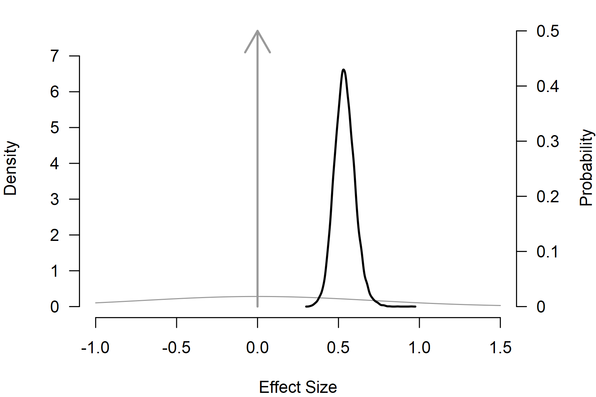
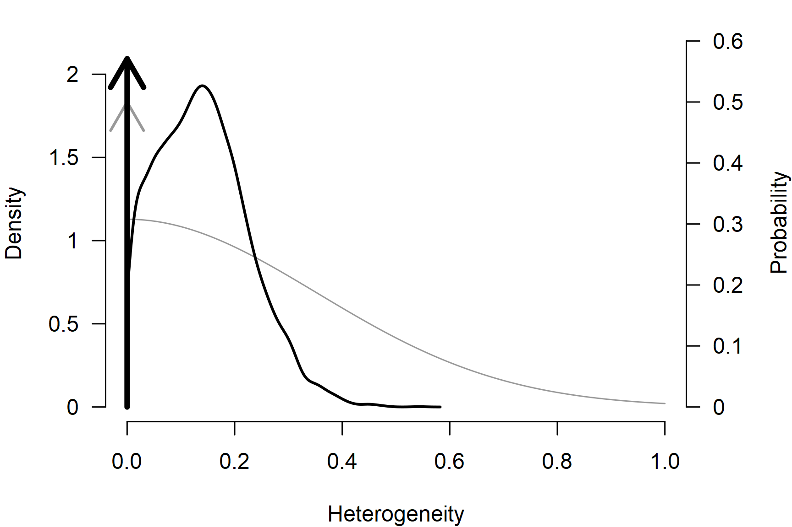
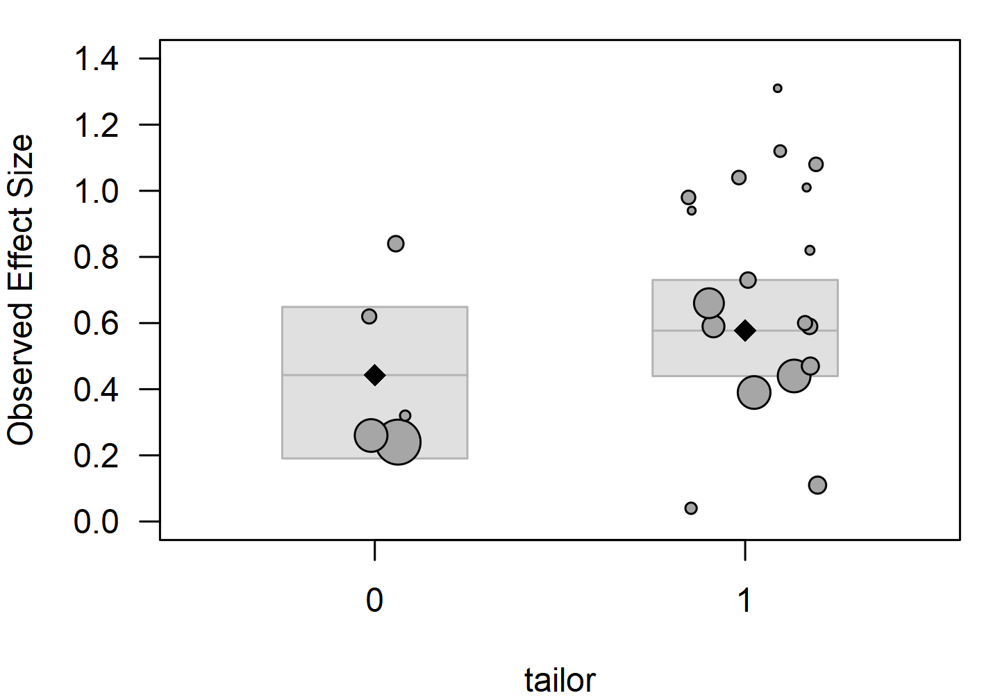
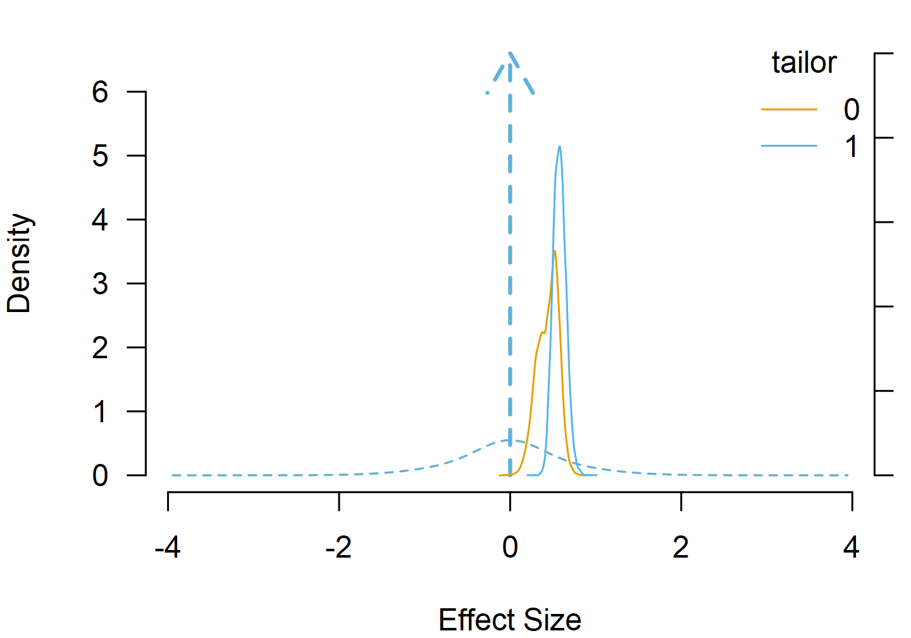

Bayesian Model Averaging
František Bartoš
4th of May 2026
Source:vignettes/20-bayesian-model-averaging.Rmd
20-bayesian-model-averaging.RmdIn meta-analysis, analysts often have to balance different assumptions about the data-generating process and decide what kind of model to fit, which covariates to include, and what publication-bias adjustment method to use. Bayesian model averaging (BMA) tries to alleviate this problem by combining competing meta-analytic models based on their prior predictive performance. Models that predicted the data better receive higher posterior model probability and more weight in the overall inference. The model-averaged estimates allow us to propagate uncertainty about the selected model and inclusion Bayes factors quantify evidence across sets of models (Hoeting et al., 1999).
In this vignette we illustrate Bayesian model-averaged meta-analysis
using BMA() on the dat.baskerville2012 dataset
to highlight the basics of Bayesian model-averaging using the
RoBMA R package (Bartoš & Maier, 2020). In a later
vignette Robust
Bayesian Meta-Analysis, we illustrate robust Bayesian
meta-analysis that extends this concept to model-averaging across
publication-bias adjustment models. All models use the default prior
distributions; see the Prior
Distributions vignette for the prior definitions and
customization options.
We start by estimating simple fixed-effect and random-effects
Bayesian meta-analytic models, turn the model-comparison into a
model-averaged fit, and finally also average over the presence vs
absence of the effect. Finally, we extend the model into a Bayesian
model-averaged meta-regression. Note that we do not demonstrate all of
the diagnostics and summary features available to all models fitted via
the RoBMA R package (see the Bayesian
Meta-Analysis vignette for more details).
Dataset
The example dataset is distributed with the metadat
package as dat.baskerville2012 and contains 23 randomized
and controlled trials of practice-facilitation interventions in primary
care. The effect size smd is the standardized mean
difference for adherence to evidence-based primary-care guidelines and
se is its standard error. The binary tailor
indicator records whether the intervention was tailored to the
participating practice (1) or applied as a uniform protocol (0); we
treat it as a factor and use it as a moderator later in the
vignette.
library("RoBMA")
data("dat.baskerville2012", package = "metadat")
dat <- dat.baskerville2012
dat$tailor <- as.factor(dat$tailor)
head(dat[, c("year", "smd", "se", "tailor")])
#> year smd se tailor
#> 1 1992 1.01 0.52 1
#> 2 2000 0.82 0.46 1
#> 3 2000 0.59 0.23 1
#> 4 2004 0.44 0.18 1
#> 5 2005 0.84 0.29 0
#> 6 2008 0.73 0.29 1Comparing Fixed and Random Effects
metafor::rma.uni() fits the conventional random-effects
model on the standardized mean differences.
res <- metafor::rma.uni(
yi = smd, sei = se,
data = dat, method = "REML"
)
res
#>
#> Random-Effects Model (k = 23; tau^2 estimator: REML)
#>
#> tau^2 (estimated amount of total heterogeneity): 0.0205 (SE = 0.0264)
#> tau (square root of estimated tau^2 value): 0.1431
#> I^2 (total heterogeneity / total variability): 22.44%
#> H^2 (total variability / sampling variability): 1.29
#>
#> Test for Heterogeneity:
#> Q(df = 22) = 27.5518, p-val = 0.1910
#>
#> Model Results:
#>
#> estimate se zval pval ci.lb ci.ub
#> 0.5600 0.0652 8.5930 <.0001 0.4322 0.6877 ***
#>
#> ---
#> Signif. codes: 0 '***' 0.001 '**' 0.01 '*' 0.05 '.' 0.1 ' ' 1The Bayesian counterpart uses brma() with the default
prior distributions: a Normal(0, 0.71) unit-information
prior distribution on the effect and a
Normal(0, 0.35)[0, Inf] half-normal prior distribution on
the heterogeneity.
fit_RE <- brma(
yi = smd, sei = se, measure = "SMD",
data = dat, seed = 1
)
fit_RE <- add_marglik(fit_RE)
summary(fit_RE, include_mcmc_diagnostics = FALSE)
#>
#> Bayesian Random-Effects Model (k = 23)
#>
#> Estimates
#> Mean SD 0.025 0.5 0.975
#> mu 0.554 0.070 0.424 0.551 0.701
#> tau 0.140 0.084 0.008 0.134 0.318Setting the heterogeneity prior distribution to a spike at zero turns the random-effects model into a fixed-effect model.
fit_FE <- brma(
yi = smd, sei = se, measure = "SMD",
prior_heterogeneity = prior("spike", list(location = 0)),
data = dat, seed = 1
)
fit_FE <- add_marglik(fit_FE)
summary(fit_FE, include_mcmc_diagnostics = FALSE)
#>
#> Bayesian Random-Effects Model (k = 23)
#>
#> Estimates
#> Mean SD 0.025 0.5 0.975
#> mu 0.525 0.055 0.418 0.525 0.633With marginal likelihoods attached to the models via
add_marglik(), bf() returns the Bayes factor
between the two fits.
bf(fit_RE, fit_FE)
#> Bayes factor in favor of Model 1 over Model 2: 0.76191The Bayes factor is close to one and neither model is decisively preferred. Rather than picking one of the two models, we can model-average over them and weight the inference by the posterior model probabilities.
From Two Fits to Model Averaging
BMA() fits a mixture of the two models in one call. Each
top-level prior-distribution argument has a paired _null
version; when we supply both, the model averages over that component.
Setting prior_effect_null = NULL drops the null component
on the effect (spike at zero) and leaves a 2-model average over presence
vs absence of heterogeneity, which is the BMA analogue of the comparison
above.
fit_BMA_he <- BMA(
yi = smd, sei = se, measure = "SMD",
prior_effect_null = NULL,
data = dat, seed = 1
)
summary(fit_BMA_he)
#>
#> Bayesian Model-Averaged Random-Effects Model (k = 23)
#>
#> Component Inclusion
#> Prior prob. Post. prob. Inclusion BF error%(Inclusion BF)
#> Effect 1.000 1.000 NA NA
#> Heterogeneity 0.500 0.429 0.752 2.363
#>
#> Estimates
#> Mean SD 0.025 0.5 0.975 error(MCMC) error(MCMC)/SD ESS R-hat
#> mu 0.538 0.063 0.421 0.536 0.670 0.00058 0.009 11883 1.000
#> tau 0.060 0.088 0.000 0.000 0.280 0.00095 0.011 8757 1.000The Components table reports the posterior probability and
inclusion Bayes factor for heterogeneity. This BF closely matches
bf(fit_RE, fit_FE) above up to MCMC noise. The two routes
compute the same quantity differently: bf() bridge-samples
marginal likelihoods from two separate fits, while BMA()
runs a single MCMC over the joint model space with a model indicator as
a latent variable and recovers the posterior model probabilities from
the indicator frequencies (Lodewyckx et al., 2011).
Adding a third or fourth component to this product-space sampler costs
one more indicator instead of a set of full model fits and
bridge-sampling runs, which is what makes the larger ensembles in
RoBMA() tractable.
Adding Effect Averaging
The default BMA() call also averages over the presence
vs absence of the effect, giving a 4-model ensemble (effect
heterogeneity, each present or absent).
fit_BMA <- BMA(
yi = smd, sei = se, measure = "SMD",
data = dat, seed = 1
)
summary(fit_BMA)
#>
#> Bayesian Model-Averaged Random-Effects Model (k = 23)
#>
#> Component Inclusion
#> Prior prob. Post. prob. Inclusion BF error%(Inclusion BF)
#> Effect 0.500 1.000 >14999.000 NA
#> Heterogeneity 0.500 0.429 0.752 2.351
#>
#> Estimates
#> Mean SD 0.025 0.5 0.975 error(MCMC) error(MCMC)/SD ESS R-hat
#> mu 0.538 0.063 0.421 0.536 0.671 0.00058 0.009 11972 1.000
#> tau 0.060 0.089 0.000 0.000 0.284 0.00096 0.011 8682 1.000Both inclusion Bayes factors come from the same MCMC. The effect BF is overwhelming on this dataset; the heterogeneity BF is the same as before. The model-averaged estimates are spike-and-slab mixtures: a point mass at the null value with weight equal to the posterior probability that the parameter is zero, and a slab carrying the remaining weight.
plot() draws both components together. The arrow at zero
is the spike’s posterior probability (right axis), the curve is the
slab’s density, and the grey shapes show the corresponding visualization
for the prior distribution.


The Model-averaged estimates summarize the marginal
posterior (the full mixture). For estimates conditional on the parameter
being non-zero (slab only) use the conditional = TRUE
argument. The marginal and conditional summaries diverge for
,
which keeps substantial posterior weight on the spike, and coincide for
,
where the spike’s posterior weight is essentially zero.
summary(fit_BMA, conditional = TRUE)
#>
#> Bayesian Model-Averaged Random-Effects Model (k = 23)
#>
#> Component Inclusion
#> Prior prob. Post. prob. Inclusion BF error%(Inclusion BF)
#> Effect 0.500 1.000 >14999.000 NA
#> Heterogeneity 0.500 0.429 0.752 2.351
#>
#> Estimates
#> Mean SD 0.025 0.5 0.975 error(MCMC) error(MCMC)/SD ESS R-hat
#> mu 0.538 0.063 0.421 0.536 0.671 0.00058 0.009 11972 1.000
#> tau 0.060 0.089 0.000 0.000 0.284 0.00096 0.011 8682 1.000
#>
#> Conditional Estimates
#> Mean SD 0.025 0.5 0.975
#> mu 0.538 0.063 0.421 0.536 0.671
#> tau 0.141 0.084 0.008 0.136 0.319Meta-Regression with Model Averaging
Adding a moderator extends the averaging to its inclusion. With
mods = ~ tailor, BMA() averages over 8
sub-models (effect
heterogeneity
tailor coefficient, each present or absent).
res_mod <- metafor::rma.uni(
yi = smd, sei = se, mods = ~ tailor,
data = dat, method = "REML"
)
res_mod
#>
#> Mixed-Effects Model (k = 23; tau^2 estimator: REML)
#>
#> tau^2 (estimated amount of residual heterogeneity): 0.0037 (SE = 0.0207)
#> tau (square root of estimated tau^2 value): 0.0610
#> I^2 (residual heterogeneity / unaccounted variability): 4.79%
#> H^2 (unaccounted variability / sampling variability): 1.05
#> R^2 (amount of heterogeneity accounted for): 81.82%
#>
#> Test for Residual Heterogeneity:
#> QE(df = 21) = 23.1124, p-val = 0.3380
#>
#> Test of Moderators (coefficient 2):
#> QM(df = 1) = 3.9378, p-val = 0.0472
#>
#> Model Results:
#>
#> estimate se zval pval ci.lb ci.ub
#> intrcpt 0.3652 0.1035 3.5277 0.0004 0.1623 0.5680 ***
#> tailor1 0.2460 0.1240 1.9844 0.0472 0.0030 0.4890 *
#>
#> ---
#> Signif. codes: 0 '***' 0.001 '**' 0.01 '*' 0.05 '.' 0.1 ' ' 1
fit_BMA_mod <- BMA(
yi = smd, sei = se, measure = "SMD",
mods = ~ tailor,
data = dat, seed = 1
)
summary(fit_BMA_mod)
#>
#> Bayesian Model-Averaged Mixed-Effect Model (k = 23)
#>
#> Component Inclusion
#> Prior prob. Post. prob. Inclusion BF error%(Inclusion BF)
#> Effect 0.500 1.000 >14999.000 NA
#> Heterogeneity 0.500 0.370 0.588 2.516
#>
#> Meta-Regression Inclusion
#> Prior prob. Post. prob. Inclusion BF error%(Inclusion BF)
#> tailor 0.500 0.557 1.257 3.513
#>
#> Common Estimates
#> Mean SD 0.025 0.5 0.975 error(MCMC) error(MCMC)/SD ESS R-hat
#> tau 0.047 0.079 0.000 0.000 0.259 0.00092 0.012 7317 1.000
#>
#> Meta-Regression
#> Mean SD 0.025 0.5 0.975 error(MCMC) error(MCMC)/SD ESS R-hat
#> intercept 0.510 0.069 0.379 0.509 0.651 0.00085 0.012 6576 1.000
#> tailor[dif: 0] -0.067 0.075 -0.224 -0.043 0.000 0.00119 0.016 4066 1.001
#> tailor[dif: 1] 0.067 0.075 0.000 0.043 0.224 0.00119 0.016 4066 1.001The Components table now also lists tailor and
its inclusion BF. Because we average the moderation across models in
which the slope is zero, regplot() shrinks the difference
towards zero when the inclusion BF is modest.

Alternatively, we can directly compute the estimated marginal means
via the marginal_means() function and visualize the prior
and posterior distributions at each moderator level.
par(mar = c(4, 4, 1, 1))
emm <- marginal_means(fit_BMA_mod)
emm
#>
#> Model-Averaged Marginal Means:
#> Mean SD 0.025 0.5 0.975 Inclusion BF
#> intercept 0.510 0.069 0.379 0.509 0.651 Inf
#> tailor[0] 0.443 0.124 0.191 0.459 0.649 130.849
#> tailor[1] 0.577 0.075 0.440 0.575 0.731 Inf
#> mu_intercept: Posterior samples do not span both sides of the null hypothesis. The Savage-Dickey density ratio is likely to be overestimated.
#> mu_tailor[1]: Posterior samples do not span both sides of the null hypothesis. The Savage-Dickey density ratio is likely to be overestimated.
plot(emm, parameter = "tailor", prior = TRUE)
Customizing Prior Components
In Bayesian model-averaged meta-analysis, every component has a
paired _null argument (i.e. prior_effect and
prior_effect_null). Either side can be NULL
(remove the component), a single prior distribution, or a list of prior
distributions (a sub-mixture). Common customizations are tightening or
widening the slab, replacing the point-zero null with a region of
practical equivalence, or forcing a moderator into every model. The
examples below use only_priors = TRUE to print the prior
structure without fitting the models.
Tighten the effect slab with rescale_priors = 0.5:
fit_priors <- BMA(
yi = smd, sei = se, measure = "SMD",
rescale_priors = 0.5,
data = dat, only_priors = TRUE
)
print_prior(fit_priors, parameter = "mu")
#> mu:
#> alternative:
#> (1/2) * Normal(0, 0.35)
#> null:
#> (1/2) * Spike(0)Replace the point-zero null on the effect with a small spread around zero (a perinull) to test against a region of practical equivalence:
fit_priors <- BMA(
yi = smd, sei = se, measure = "SMD",
prior_effect_null = prior("normal", list(mean = 0, sd = 0.05)),
data = dat, only_priors = TRUE
)
print_prior(fit_priors, parameter = "mu")
#> mu:
#> alternative:
#> (1/2) * Normal(0, 0.71)
#> null:
#> (1/2) * Normal(0, 0.05)Force tailor into every model by dropping its null:
fit_priors <- BMA(
yi = smd, sei = se, measure = "SMD",
mods = ~ tailor,
prior_mods_null = list(tailor = NULL),
data = dat, only_priors = TRUE
)
print_prior(fit_priors, parameter_mods = "tailor")
#> mu_tailor:
#> alternative:
#> (1/1) * mean difference contrast: mNormal(0, 0.35)A tighter half-normal slab on :
fit_priors <- BMA(
yi = smd, sei = se, measure = "SMD",
prior_heterogeneity = prior(
distribution = "normal",
parameters = list(mean = 0, sd = 0.25),
truncation = list(lower = 0)
),
data = dat, only_priors = TRUE
)
print_prior(fit_priors, parameter = "tau")
#> tau:
#> alternative:
#> (1/2) * Normal(0, 0.25)[0, Inf]
#> null:
#> (1/2) * Spike(0)Empirical informed prior distributions based on the Cochrane database
are available via prior_informed_field and
prior_informed_subfield; see Informed Bayesian Model-Averaged
Meta-Analysis in Medicine.
Other brma Features
A BMA() fit is also a brma object:
summary(), plot(), print_prior(),
predict(), marginal_means(),
funnel(), rstudent(), qqnorm(),
and influence() work the same way as on a single-model fit;
see Bayesian
Meta-Analysis. Prior-distribution families and informed prior
distributions are covered in Prior Distributions. For
binary or count outcomes, BMA.glmm() does the same
product-space averaging on a binomial-normal or Poisson-normal
likelihood. For model averaging that also adjusts for publication bias,
see Robust Bayesian
Meta-Analysis.